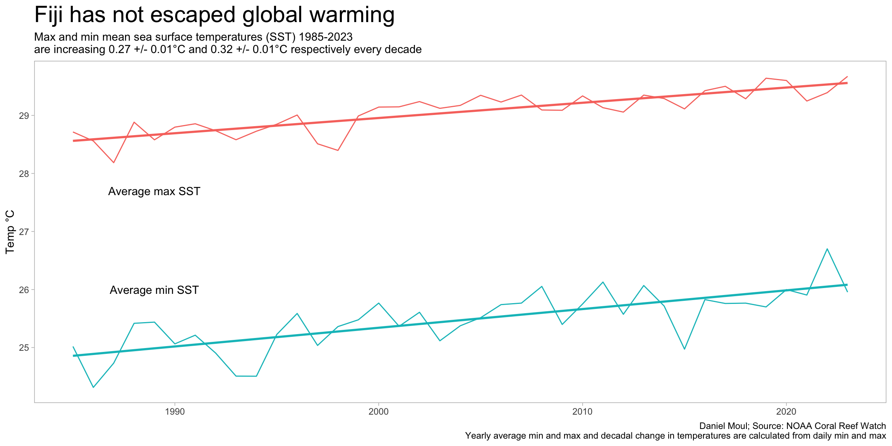
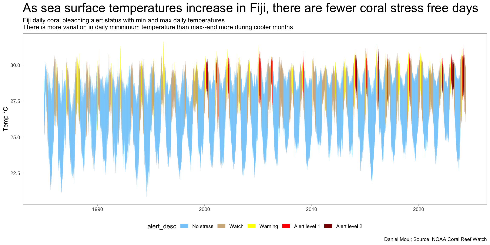
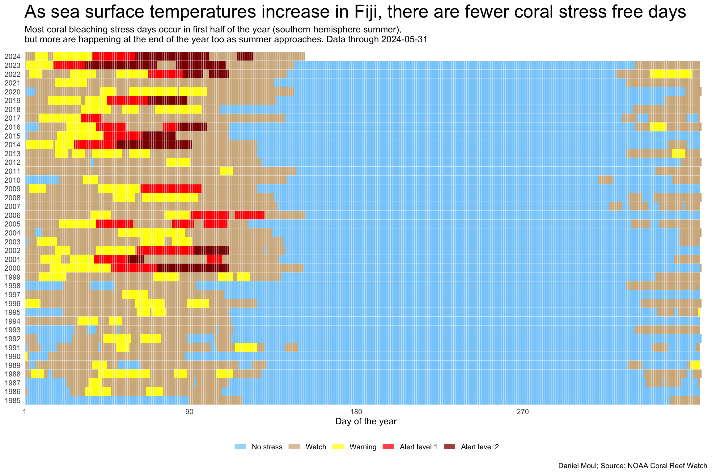
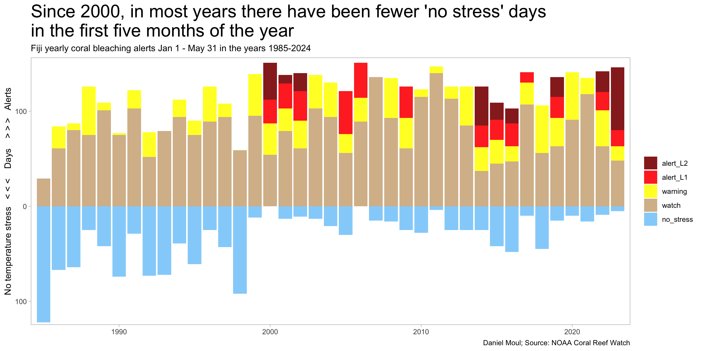

Warmer temperatures stress coral and can lead to bleaching events. Corals can recover from occasional bleaching events, but not when they are too frequent, or the temperature goes too high or stays high too long.1 “… ambient water temperatures as little as 1 to 2 °C above a coral’s tolerance level, indicated by summer monthly mean temperatures, can cause coral bleaching”.2
First observed in the early 1980s, mass coral bleaching (whereby corals bleach over a wide area that can span tens, hundreds, or even thousands of kilometers) has become one of the most visible and damaging marine ecological impacts of persistently rising ocean temperatures. Bleaching is the process by which corals lose the symbiotic algae that give them their distinctive colors and main energy sources. If a coral is severely bleached, disease and death become likely. Severe coral bleaching has become more extensive, frequent, and intense. This can be seen in the acceleration of heat stress events that cause mass bleaching, and in new multi-decadal bleaching observation datasets. As manifested by the devastating 2014-2017 global coral bleaching event (now considered the longest, most widespread and most damaging coral bleaching event on record), mass bleaching events around the globe are often lasting many months; are becoming an annual event; and are impacting coral reefs that never bleached before. It’s clear that remotely monitoring coral reefs and providing actionable intelligence are critical for early detection, on-the-ground response, communication, and enhancing coral reef resilience in a rapidly warming world.3
The NOAA Coral Reef Watch uses satellite remote sensing data to create 5 km resolution “virtual stations” to model sea surface temperature (SST) and summarize the model in maps and gauges4. In this chapter I use the model output and bleaching alert levels with focus limited to Fiji.
In summary: Fiji has not been spared the rising sea (and air) temperatures seen globally, and the outlook for Fiji’s corals seems to be getting worse. But it’s not as bad as some other places.
For example, on 14 June 2024 the map of 7-day alert levels for the Pacific region5 shows an area between Fiji and Hawaii at AL4. The highest alert level Fiji experienced–ever–is AL2.
Linear regressions of daily max and min temperatures provide a useful way to characterize the decadal trends since 1985.
Show the code
year_min <-min(sst_yearly_avg$year)year_max <-max(sst_yearly_avg$year)# determine decadal change in °Cmod_sst_max <- dta %>%lm(sst_max ~ date, # date is in days since 1970-01-01data = .) |>tidy()sst_max_delta_decade <- mod_sst_max$estimate[2] *365.24*10sst_max_delta_decade_eps <- mod_sst_max$std.error[2] *365.24*10mod_sst_min <- dta %>%lm(sst_min ~ date,data = .) |>tidy()sst_min_delta_decade <- mod_sst_min$estimate[2] *365.24*10sst_min_delta_decade_eps <- mod_sst_min$std.error[2] *365.24*10sst_yearly_avg |>ggplot() +geom_line(aes(x = year, y = temp_c, color = metric)) +geom_smooth(aes(x = year, y = temp_c, color = metric),method ="lm", formula ='y ~ x',se =FALSE) +annotate("text", x =c(1989, 1989), y =c(27.7, 26),label =c("Average max SST", "Average min SST")) +guides(color ="none") +theme(legend.position ="bottom") +labs(title ="Fiji has not escaped global warming",subtitle =glue("Max and min mean sea surface temperatures (SST) {year_min}-{year_max}","\nare increasing {round(sst_max_delta_decade, digits = 2)} +/- {round(sst_max_delta_decade_eps, digits = 2)}°C", " and {round(sst_min_delta_decade, digits = 2)}", " +/- {round(sst_min_delta_decade_eps, digits = 2)}°C respectively every decade"),x =NULL,y ="Temp °C",color =NULL,caption =glue(my_caption,"\nYearly average min and max and decadal change in temperatures are calculated from daily min and max") )

Figure 3.2: Sea surface temperatures in Fiji are increasing
Air temperature is increasing as well, as noted in this Australian Government report (note different start and end years than used above):
Annual maximum and minimum temperatures have increased in both Suva (Figure 4) and Nadi since 1950. In Suva, maximum temperatures have increased at a rate of 0.15°C per decade and at Nadi Airport the rate of increase has been 0.18°C per decade. These temperature increases are consistent with the global pattern of warming.7
NOAA Coral Watch uses sea surface temperature (SST) as the basis for determining normal temperatures and excessively warm periods. See the reference below for details about the methodology.
The CoralTemp SST provides a measurement of the nighttime ocean temperature at the sea surface, calibrated to 0.2 meters depth. Nighttime-only satellite SST observations are used to reduce the influence of daytime warming caused by solar heating at and near the sea surface and to avoid contamination from solar glare. Furthermore, at night, water temperatures at and near the sea surface are more vertically uniform. Compared with the daytime SST and blended day-night SST, the nighttime SST measurements provide more stable estimates of heat stress conducive to coral bleaching. The CoralTemp SST can be considered as a sea surface foundation temperature as described by the Group for High Resolution Sea Surface Temperature (GHRSST).8
The above web page includes this summary of the alert levels and the risks they indicate:
NOAA Coral Reef Watch
Stress Level
Potential coral bleaching and mortality
No Stress
–
Bleaching Watch
–
Bleaching Warning
Risk of Possible Bleaching
Bleaching Alert Level 1
Risk of Reef-Wide Bleaching
Bleaching Alert Level 2
Risk of Reef-Wide Bleaching with Mortality of Heat-Sensitive Corals
Bleaching Alert Level 3
Risk of Multi-Species Mortality
Bleaching Alert Level 4
Risk of Severe, Multi-Species Mortality (> 50% of corals)
Bleaching Alert Level 5
Risk of Near Complete Mortality (> 80% of corals)
Plotting the max and min daily temperature and coloring it by the alert level reveals (1) the yearly temperature and alert pattern; and (2) increasing number of AL1 and AL2 days since 2000 and especially 2014.
Show the code
dta_for_plot_alerts <- dta |>select(date, year, baa_7day_max, alert_desc) |>filter(baa_7day_max >0)dta |>select(date, year, sst_min, sst_max, baa_7day_max, alert_desc) |>#sst_90th_hs, mutate(baa_7day_max =factor(baa_7day_max)) |>ggplot() +geom_ribbon(aes(x = date, ymin = sst_min, ymax = sst_max),alpha =0.01, fill ="lightskyblue") +geom_segment(aes(x = date, y = sst_min, yend = sst_max, color = alert_desc),linewidth =0.25,alpha =0.3) +scale_color_manual(values =c("lightskyblue", "tan", "yellow", "red", "darkred")) +# scale_x_continuous(# labels = label_date(format = "%Y"),# expand = expansion(add = days(180))# # expand = expansion(mult = c(0.01, 0.01))# ) +guides(color =guide_legend(override.aes =list(linewidth =3, alpha =1.0))) +theme(legend.position ="bottom") +labs(title ="As sea surface temperatures increase in Fiji, there are fewer coral stress free days",subtitle =glue("Fiji daily coral bleaching alert status with min and max daily temperatures","\nThere is more variation in daily mininimum temperature than max--and more during cooler months"),x =NULL,y ="Temp °C",caption = my_caption )

Figure 3.3: Daily sea surface temperature varies and varies more in minimum temperatures and more during the cooler months
Figure 3.4: Daily sea surface temperature varies, and more in minimum temperatures, and more during the cooler months
The ribbon plot in Figure 3.5 shows the alert level every day from 1985 through May 2024.
Show the code
strip_eps <-0.49dta |># filter(year >= 2005) |>select(date, year, sst_min, sst_max, baa_7day_max, alert_desc) |>mutate(baa_7day_max =factor(baa_7day_max)) |>ggplot() +geom_segment(aes(x =yday(date), xend =yday(date), y = year - strip_eps, yend = year + strip_eps, color = alert_desc),linewidth =0.95) +scale_color_manual(values =c("lightskyblue", "tan", "yellow", "red", "darkred")) +scale_x_continuous(breaks =c(1, 90, 180, 270),expand =expansion(mult =c(0, 0.01))) +scale_y_continuous(breaks =1985:2024,expand =expansion(mult =c(0, 0.01))) +guides(color =guide_legend(override.aes =list(linewidth =3, alpha =0.75))) +theme(legend.position ="bottom",panel.border =element_blank(),axis.ticks =element_blank()) +labs(title ="As sea surface temperatures increase in Fiji, there are fewer coral stress free days",subtitle =glue("Most coral bleaching stress days occur in first half of the year (southern hemisphere summer)", ",\nbut more are happening at the end of the year too as summer approaches."," Data through {ytd_max_date}"),x ="Day of the year",y =NULL,color =NULL,caption = my_caption )

Figure 3.5: Daily sea surface temperature ribbon 1985-2024
Figure 3.6 presents the same data summarized by year and count of each alert category.
Figure 3.6: Since 2000 Level 1 or level 2 alerts have have occured more years than not
Since most of the stress days occur in the first five months of the year, it’s eye-opening in Figure 3.7 to see how few non-stress days are occuring during these months.
Show the code
dta_for_plot_alerts <- dta |>mutate(yday =yday(date),level0 = baa_7day_max ==0,level1 = baa_7day_max ==1,level2 = baa_7day_max ==2,level3 = baa_7day_max ==3,level4 = baa_7day_max ==4 ) |>select(date, yday, year, starts_with("level")) |>filter(yday <=yday("2023-05-31")) |># ytd_max_yday) |>summarize(level0 =sum(level0),level1 =sum(level1),level2 =sum(level2),level3 =sum(level3),level4 =sum(level4),.by = year) |>mutate(across(contains("level"), function(x) na_if(x, 0)))dta_for_plot <- dta_for_plot_alerts |>mutate(level0 =-1* level0)dta_for_plot |>filter(year <2024) |># avoid partial yearselect(year, starts_with("level")) |>pivot_longer(cols =starts_with("level"),names_to ="metric",values_to ="value") |>mutate(metric =case_match( metric,"level0"~"no_stress", "level1"~"watch", "level2"~"warning", "level3"~"alert_L1","level4"~"alert_L2" )) |>mutate(metric =factor(metric,levels =rev(c("no_stress", "watch", "warning", "alert_L1", "alert_L2")))) |>ggplot() +geom_col(aes(x = year, y = value, fill = metric),na.rm =TRUE,alpha =0.9) +scale_x_continuous(expand =expansion(mult =c(0.01, 0.01))) +scale_y_continuous(expand =expansion(mult =c(0.01, 0.02)),breaks =c(-300, -200, -100, 0, 100, 200),labels =c("300", "200", "100", "0", "100", "200")) +# scale_fill_viridis_d(end = 0.95, # direction = -1) +scale_fill_manual(values =rev(c("lightskyblue", "tan", "yellow", "red", "darkred"))) +labs(title =glue("Since 2000, in most years there have been fewer 'no stress' days", "\nin the first five months of the year"),subtitle =glue("Fiji yearly coral bleaching alerts Jan 1 - May 31 in the years 1985-2024"),x =NULL,y ="No temperature stress < < < Days > > > Alerts",fill =NULL,caption = my_caption )

Figure 3.7: Since 2000, in most years there have been fewer ‘no stress’ days in the first five months of the year
{kind=link}